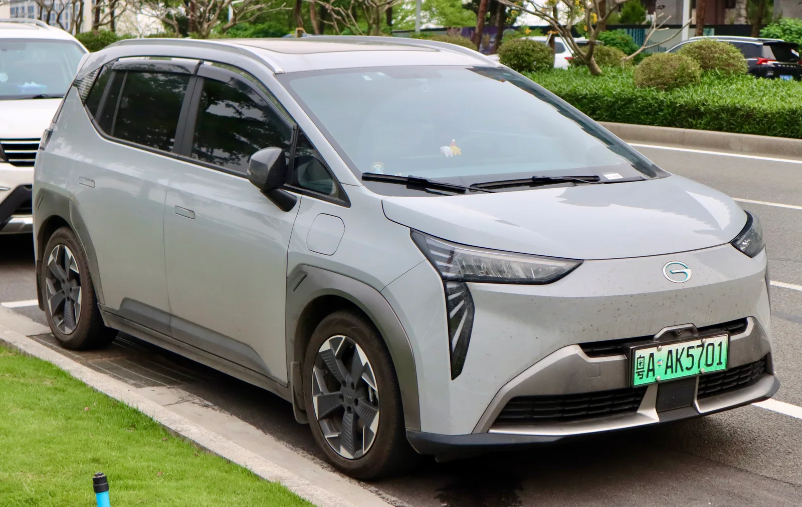
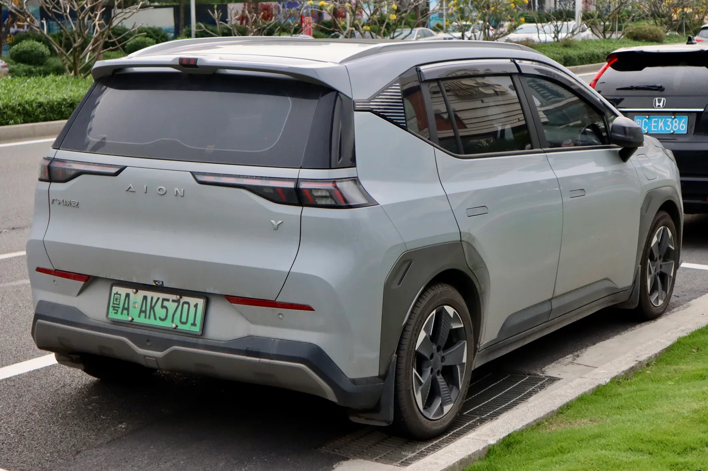
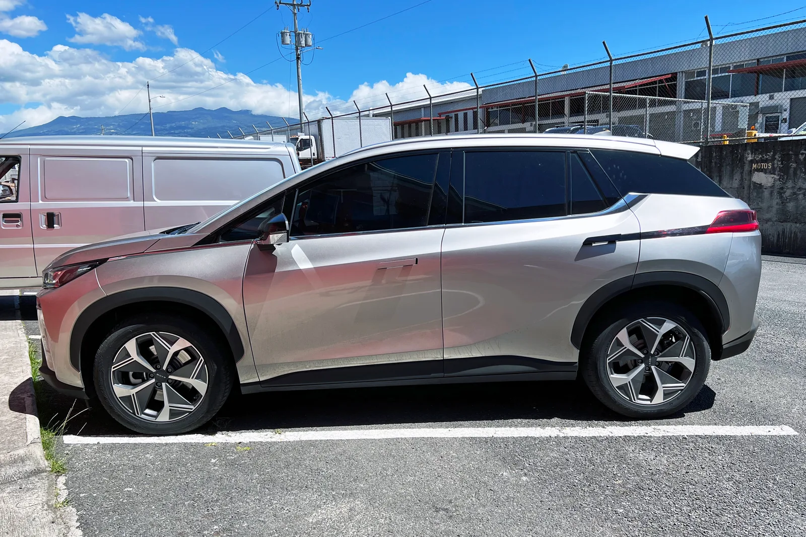
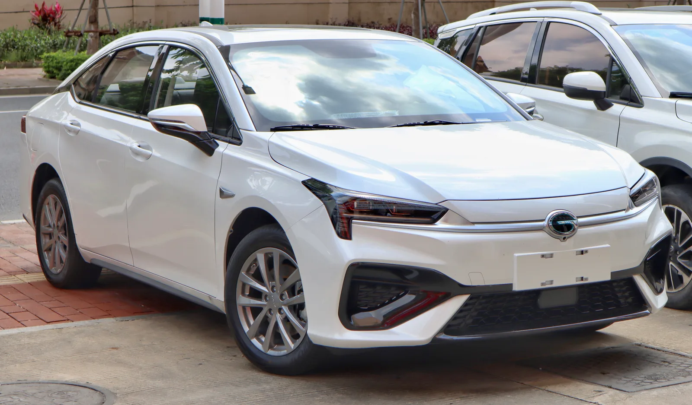

▲ 위에7은 GAC그룹 산하 트럼프치 브랜드 소속이지만, 이 그룹의 전기차 전담 브랜드 '아이안(埃安)'도 나란히 초저가 경쟁의 한 축을 이루고 있다 ⓒ Wikimedia Commons
2026년 9월 22일, 중국 광치(GAC)그룹 산하 트럼프치(传祺) 브랜드가 새 오프로드 SUV '위에7(越7)'을 출시했다. 권익가(权益价, 프로모션 할인이 반영된 실질 판매가) 기준 16.18만~20.78만 위안, 원화로 환산하면 대략 2990만~3840만원 수준이다. 그런데 정작 화제가 된 건 가격표가 아니라 출시 30분 만에 쌓인 사전주문 대수, 1만 6815대였다.
이 소식은 국내에서 종종 'GAC 아이안(埃安)'이라는 브랜드명과 함께 회자되지만, 정확히는 GAC그룹 산하의 트럼프치(传祺) 브랜드 모델이다. 아이안은 같은 GAC그룹이 운영하는 별도의 순수 전기차 전담 브랜드로, 위에7과는 소속 브랜드가 다르다. 다만 두 브랜드 모두 '한 지붕 두 가족'처럼 초저가·물량 경쟁이라는 같은 전략을 공유하고 있다는 점에서, 이번 위에7의 흥행은 중국 신에너지차 시장 전체를 이해하는 데 좋은 사례가 된다.
1. 위에7, 무엇이 얼마에 나왔나
위에7은 GAC그룹이 트럼프치 브랜드를 통해 내놓은 오프로드 지향 대형 SUV다. 차체 크기는 전장 5045mm, 전폭 2004mm, 전고 1933mm, 휠베이스 2900mm로 준대형급에 해당하며, 기본 지상고는 230mm, 에어서스펜션 옵션을 더하면 최대 310mm까지 높아진다. 차체 구조는 정통 바디온프레임이 아니라 모노코크(일체형 차체) 플랫폼을 채택해, 오프로드 감성은 살리되 승차감과 온로드 주행성을 함께 노렸다.
| 트림 | 구동방식 | 가격(위안) | 원화 환산(약) |
|---|---|---|---|
| Pro | 2WD | 16.18만 | 2990만원 |
| Max | 2WD | 17.78만 | 3290만원 |
| Max | 4WD | 19.78만 | 3660만원 |
| Ultra | 4WD | 20.78만 | 3840만원 |
파워트레인은 1.5리터 터보 엔진(125kW·168마력)에 전동모터를 결합한 플러그인 하이브리드(PHEV) 방식이다. 2WD 사양은 전륜에 205kW(275마력) 모터 하나만 장착해 정지 상태에서 시속 100km까지 약 7.49초가 걸리고, 4WD 사양은 후륜에 220kW(295마력) 모터를 추가해 앞뒤 합산 출력을 425kW까지 끌어올리면서 같은 구간을 약 4.2초까지 단축한다.
📍 배터리는 두 종류 — 순수 전기 주행거리는 짧은 편
배터리는 28.3kWh(리튬인산철)와 약 46kWh(45.975kWh, 삼원리튬) 두 가지가 제공되며, 순수 전기 주행거리는 중국 CLTC 기준 161~261km(WLTP 환산 시 약 132~214km 수준으로 추정)에 그친다. 다만 엔진까지 더한 복합(연료+전기) 주행거리는 최대 1352km에 달하는 것으로 전해졌고, 급속충전 시 30%→80%까지 약 15분이면 충전이 끝난다. 순수 전기차라기보다는 '충전도 되고 주유도 되는 오프로드 SUV'에 가까운 셈이다.

▲ 위에7 실차 이미지는 아직 위키미디어 커먼즈에 등록되지 않아, 같은 GAC그룹 소속 아이안 Y의 후면 이미지로 그룹 차원의 디자인 언어를 참고할 수 있다 ⓒ Wikimedia Commons
위에7의 상세 제원은 아래 데이터베이스에서 확인할 수 있다. CarNewsChina 위에7 제원 바로가기
2. 30분 1만 6815대, 숫자가 크다는 것의 의미
'30분 만에 1만 6815대'라는 숫자를 그대로 받아들이기 전에, 중국 자동차 시장의 용어부터 짚을 필요가 있다. 여기서 말하는 '주문(订单/大定)'은 대개 소액의 예약금을 걸고 구매 의사를 밝힌 사전주문을 의미하며, 실제 계약금(정금)까지 낸 확정 계약과는 다르고 이후 취소되는 물량도 존재한다. 그럼에도 이 수치가 의미 있는 이유는 같은 방식으로 집계되는 경쟁 신차들과 비교했을 때 상대적으로 매우 높은 수준이기 때문이다.
✅ 왜 이 정도 사전주문이 '이례적'으로 평가되나
· 중국 신에너지차(NEV) 시장은 2026년 들어 월평균 소매 침투율이 60%를 넘는 성숙 단계에 접어들었고, 신차가 쏟아지는 만큼 웬만한 화제성 없이는 대량 주문을 끌어내기 어려워졌음
· 업계에서는 2026년 들어 '가격전쟁에서 가치전쟁으로' 전환되는 분위기가 뚜렷해, 완성차 업체들이 오히려 가격을 올리는 사례도 늘고 있음
· 이런 흐름 속에서도 위에7처럼 경쟁 모델 대비 확실히 저렴한 가격을 내세운 신차는 여전히 즉각적인 물량 반응을 얻어낸다는 점에서, 중국 소비자의 가격 민감도가 완전히 사라진 것은 아니라는 신호로도 읽힌다
3. 경쟁 구도 — 방정표 티7, BYD, 그리고 가격 전쟁의 최전선
위에7이 정조준한 상대는 BYD 산하 오프로드 전문 브랜드 팡청바오(方程豹)의 '티7(钛7)'이다. 티7의 중국 내수 판매가는 17.98만~21.98만 위안으로, 위에7보다 트림별로 약 1만~1.2만 위안(약 190만~220만원) 높게 책정돼 있다. 즉 위에7은 티7과 거의 동급 사양을 갖추면서 전 트림에 걸쳐 확실히 더 싼 가격을 무기로 내세운 셈이다.
| 모델 | 브랜드(소속그룹) | 가격대(위안) |
|---|---|---|
| GAC 위에7 | 트럼프치(GAC그룹) | 16.18만~20.78만 |
| 팡청바오 티7 | 팡청바오(BYD그룹) | 17.98만~21.98만 |
해외 매체들은 위에7을 GWM(창청기차)의 하드코어 SUV '탱크500', BYD의 프리미엄 브랜드 '덴자 B5'와도 비교하며 이들보다 저렴한 대안으로 평가하고 있다. 위에7은 향후 해외 시장에는 'GAC XT80'이라는 이름으로 수출될 예정인데, 이는 중국 내수용 브랜드명과 수출용 브랜드명을 분리해 운용하는 중국 완성차 업체들의 일반적인 전략과 같은 맥락이다.

▲ GAC그룹은 트럼프치·아이안 두 브랜드를 통해 각각 PHEV·순수전기 라인업에서 동시에 초저가 경쟁을 벌이고 있다(사진은 아이안 V) ⓒ Wikimedia Commons
4. 헷갈리기 쉬운 이름, GAC 아이안(埃安)은 지금 어떤 상황인가
위에7과 브랜드가 다름에도 'GAC 아이안 위에7'이라는 표현이 퍼진 것은 우연이 아니다. 아이안은 GAC그룹이 순수 전기차 전용으로 키워온 브랜드로, 최근 그룹 내에서 가장 공격적으로 성장하는 축이기 때문이다.
✅ GAC 아이안 브랜드 2026년 실적 요약
· 2026년 1~8월 누적 판매 약 24만 4100대, 전년 동기 대비 +58.37% 증가
· 2026년 4월 단월 판매 3만 8034대(전년 동월 대비 +63.0%), 1~4월 누적 11만 3219대
· GAC그룹 전체의 2026년 1~8월 신에너지차 판매도 전년 대비 약 63% 증가하며, 아이안이 그룹 전동화 실적을 견인하는 구조
· 아이안은 그동안 택시·차량공유 등 B2B(기업·기관) 판매 비중이 높다는 지적을 받아왔는데, 최근에는 일반 소비자(B2C) 비중 확대로 반기 매출이 전년 대비 약 83% 늘어난 것으로 전해짐
즉 위에7의 흥행은 '아이안 브랜드의 신차'라서가 아니라, GAC그룹 전체가 트럼프치·아이안 두 축에서 동시에 저가 물량 공세를 벌이고 있는 흐름의 한 사례로 보는 게 정확하다. 다만 소비자 입장에서는 두 브랜드가 쉽게 헷갈릴 수 있을 만큼 GAC그룹의 저가 전동화 전략이 폭넓게 펼쳐지고 있다는 뜻이기도 하다.
5. 중국 초저가 경쟁, 어디까지 왔나 — '가치전쟁' 담론 속의 반례
2026년 들어 중국 자동차 업계에서는 '가격전쟁이 끝나가고 있다'는 진단이 잇따라 나왔다. 2026년 1분기 자동차 산업 평균 영업이익률이 3.2%까지 떨어지는 등 저가 경쟁으로 인한 출혈이 한계에 다다랐다는 위기감이 커졌고, 실제로 지리(길리)·샤오펑·리오토 등 여러 업체가 신차 가격을 오히려 올리는 사례도 늘었다.
📍 '가치전쟁'과 '초저가 물량전'은 동시에 벌어지고 있다
위에7의 흥행은 이런 '가치전쟁으로의 전환' 담론과 정반대의 신호로도 읽힐 수 있다. 프리미엄 사양·자율주행 기능으로 단가를 올리는 상위 세그먼트와, 동급 경쟁 모델보다 조금이라도 싼 가격으로 물량을 쓸어담는 대중 세그먼트가 같은 시장 안에서 동시에 작동하고 있는 셈이다. 2026년 4월 기준 중국 신에너지차 소매 침투율이 61.4%까지 올라간 성숙 시장에서, 완성차 업체들은 세그먼트별로 서로 다른 생존 전략을 택하고 있는 것으로 풀이된다.
중국 신에너지차 시장의 가격전쟁·가치전쟁 전환 흐름에 대한 보다 자세한 분석은 아래에서 확인할 수 있다. GAC그룹 신에너지차 실적 관련 보도 바로가기
6. 한국 시장 진출 가능성은

▲ GAC그룹은 세단(아이안 S)부터 오프로드 SUV(위에7)까지 전 세그먼트에서 초저가 전략을 병행하고 있다 ⓒ Wikimedia Commons
현재까지 GAC그룹(트럼프치·아이안 포함)이 한국 승용 전기차·PHEV 시장에 진출하겠다는 공식 계획은 확인되지 않는다. 2026년 한국 수입차 시장에서는 오히려 BYD가 '돌핀' 등 보급형 전기차의 국내 환경 인증을 마치고 3000만원대 초저가 전략으로 시장 진입을 본격화하는 모습이 두드러진다.
✅ GAC 그룹의 한국 진출 가능성을 낮게 보는 이유
· GAC그룹은 현재 국내에서 승용 브랜드 딜러망·인증 절차가 갖춰져 있지 않음
· 위에7은 오프로드 지향 PHEV 대형 SUV로, 국내 PHEV 세제 혜택 구조나 충전 인프라 여건과 맞지 않는 부분이 있음
· 이미 BYD가 승용 부문에서 한국 시장 개척자 역할을 하고 있어, 후발주자인 GAC그룹이 굳이 서두를 유인이 크지 않음
· 다만 GAC그룹 산하에는 상용차 부문(GAC Commercial Vehicle)도 존재하는 만큼, 승용이 아닌 상용 전기차 영역에서의 국내 협력 가능성은 완전히 배제하기 어려움
7. 요약
GAC그룹 트럼프치 브랜드의 오프로드 PHEV SUV '위에7'이 2026년 9월 22일 16.18만~20.78만 위안에 출시돼 30분 만에 1만 6815대의 사전주문을 받았다. 흔히 'GAC 아이안 위에7'으로 불리지만, 정확히는 아이안이 아닌 트럼프치 브랜드 소속이며, 아이안은 같은 GAC그룹의 별도 순수전기차 브랜드로 2026년 1~8월 누적 판매가 전년 대비 58% 이상 늘어난 별개의 성장세를 보이고 있다.
위에7의 흥행은 BYD 산하 팡청바오 티7보다 한 체급 저렴한 가격을 앞세운 결과다. 2026년 중국 자동차 업계 전반이 '가격전쟁에서 가치전쟁으로' 전환되고 있다는 진단이 우세한 가운데도, 확실한 가격 우위를 갖춘 신차는 여전히 즉각적인 물량 반응을 얻어낸다는 점에서 이번 사례는 시사하는 바가 크다.
한국 시장 진출은 현재로선 가능성이 낮다. GAC그룹의 국내 승용 브랜드 진출 계획은 확인되지 않으며, 중국 브랜드 중에서는 BYD가 저가 전기차로 한국 시장 개척에 앞서 있는 상황이다.